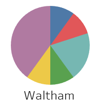
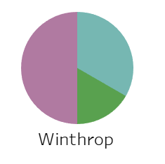

Subtheme: Historical Harms and Contemporary Effects
Overall Analysis Questions
Discoveries & Insights

 
Summary
It is interesting to see how these neighborhoods were viewed by the HOLC in the past and how they exist today. The system of redlining determined who could access loans and home ownership, which are significant contributors to the accumulation of wealth. These government policies from the past are relevant to the wealth distribution of today. How do they affect Boston communities today? What can be done to address this?